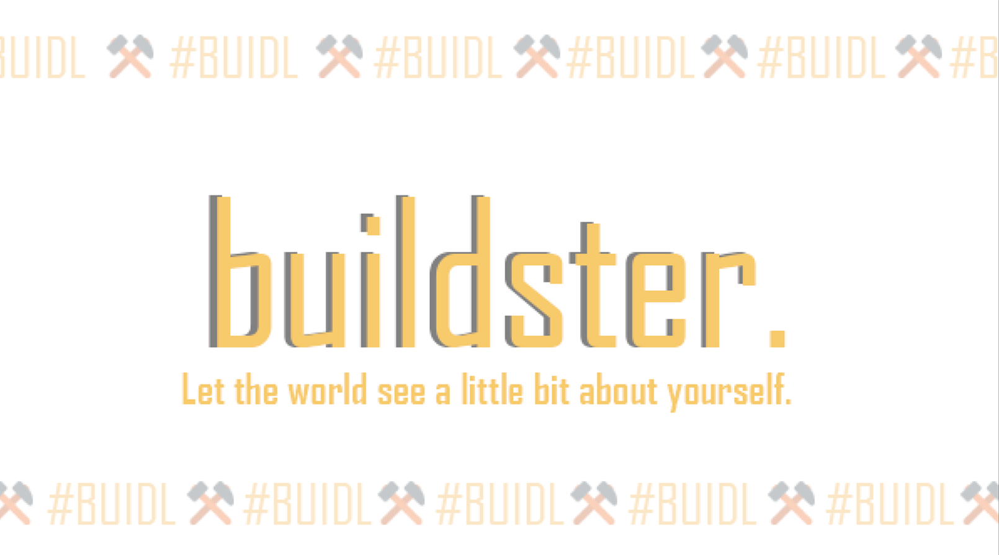

zabdiel.eth
Community and Web 3.0 Builder
The Buildster #BUIDL!
START your journey!

What is BUILDSTER?
The Buildster wants to enable individuals to personalize the look and feel of their sites, similar to how Friendster did back in the day, so that individuals can genuinely express themselves and have a social media platform that reflects who they truly are. This web 3.0 native social networking platform also allows users to promote their NFT's, as well as add a panel to showcase their abilities in areas such as art, writing, dance, editing, photography, video and so much more. This could be a place for builders to show to the world what they have built and what projects they are currently working on.

Profiles you might know